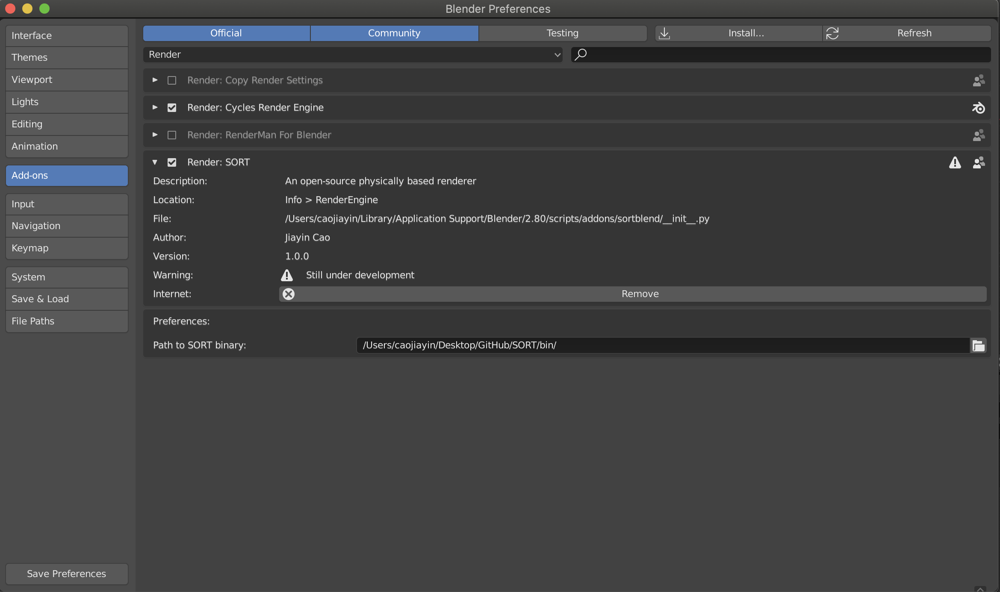

Building SORT with source code
SORT is a cross-platform project that runs on multiple platforms, including Windows, Mac OS, and Ubuntu.
It is fully open-source and built on C++ 17. Following are the mandatory software to compile SORT:
- CMake (3.1 or higher version, please also put cmake in executable directory so that the script can call it.).
- C++ compiler that compiles C++17. ( MSVC 2015, GCC 5 ).
- Blender 2.8. It is not a mandatory software to run SORT if there is already a resource file. However, since the input scene file is generated by Blender through SORT Blender Plugin, it is necessary to install Blender to generate input scene files.
Setup Compiling Environment
Platform Independent Compiling Options
There are only a few compiling options for us to pay attention in SORT CMake generation.
- CMAKE_BUILD_TYPE
This is set ‘Release’ by default. Choose ‘Debug’ if you want to generate a debug build. If you only want to build SORT for running it, there is no need to touch this option. - SORT_ENABLE_PROFILER
SORT's profiling system uses the open source project Easy Profiler. Since this is a very performance sensitive option, it is turned off by default. By default, SORT won't even download and compile the library. In order to compile SORT with it, it is necessary to compile the project it first. - SORT_ENABLE_STATS
This will enable SORT to output some statistics information after running SORT. It is also turned on by default. This feature has very limited impact on rendering performance. Leaving it on should be generally fine. However, it is also fine to turn it off if there is no need to check the statistics data after rendering.
Download Dependencies before Compiling
SORT's shading system heavily replies on another open source project of mine, Tiny Shading Language, which is an essential part of interpreting its shader code. In order to compile SORT successfully, it is mandatory to get a compiled version of Tiny Shading Language first. The following command, 'make update_dep', will do so. What it does under the hood is just checking out the source code of that project and compile it on the fly.
Windows
It is necessary to install Visual Studio 2015 or above to compile SORT on Windows. And please also make sure that ‘msbuild.exe’ is in the system ‘Path’ folder so that the script can run it directly.
Mac OS
Please install XCode first before compiling on MacOS.
Ubuntu
Unlike the other two platforms, for which SORT has packed all necessary libararies in the dependency, some of the depedent libraries is OS dependent. SORT doesn’t pack those OS dependent libraries with it, it is programmer’s responsibility to setup the correct environment before building it, meaning compiling SORT on Ubuntu requires some basic setup first.
Following is the tools and library needed by SORT and the correct way to install them on Ubuntu (Xenial)
- Clang 6
wget -O - https://apt.llvm.org/llvm-snapshot.gpg.key | sudo apt-key add -
sudo apt-add-repository "deb http://apt.llvm.org/xenial/ llvm-toolchain-xenial-6.0 main"
sudo apt-get update
sudo apt-get install -y clang-6.0 - G++ 7, the default version GCC on Ubuntu Xenial won’t compile SORT successfully.
sudo apt-get install -y software-properties-common
sudo add-apt-repository ppa:ubuntu-toolchain-r/test
sudo apt update
sudo apt install g++-7 -y
sudo update-alternatives --install /usr/bin/gcc gcc /usr/bin/gcc-7 60 --slave /usr/bin/g++ g++ /usr/bin/g++-7
sudo update-alternatives --config gcc - Make sure to download the dependency through ‘getdep_ubuntu_xenial.sh’
There is no need to setup G++ on Ubuntu Bionic and Focal since the default version comes with the system is already G++7, which is sufficient for compiling SORT.
Unfortunately, due to limited resources, I don’t have time trying and maintaining SORT on every single version of Ubuntu. If you happen to build SORT on other version, you need to rebuild TSL library by yourself.
Compiling SORT
- make release
Generate a release version build. - make debug
Generate a debug version build.
Of course, it is also possible to manually generate the project and load it by yourself in any proper way you see fit.
Other Available Commands
- make update
Sync the latest code on Github. - make update_dep
Retreive the dependencies again. - make clean
Clean all genearated files and folders. - make clean_dep
Clean the dependency files. - make help
Print help message - make dep_info
Print information about dependencies. - make about
Print introduction about the project and myself.
Generated Binary
Only one executable file will be generated. It will be generated in a newly created folder ‘bin’ in the SORT root folder. For release version build, an executable named ‘sort_r’ will be generated. For debug version build, it is named ‘sort_d’.
Deploying SORT
Active SORT in Blender
There are two ways to activate it in Blender.- Copying the plugin to Blender
There is a folder with the name ‘sortblend’ in SORT root folder, which has all blender plugin python source code in it. In order to add SORT in Blender as a new renderer, it is mandatory to copy the source code folder to the following folder,
- Windows
C:\Program Files\Blender\2.79\scripts\addons - Mac OS
~/Library/Application Support/Blender/2.79/script/addons/ - Ubuntu
/home/$user/blender/2.79/scripts/addons/
Depending the exact version of Blender, the above paths could be slightly different. However, the paths should be very similar with them.
- Windows
- Indirecting the path in Blender
It is also possible to set the script path of Blender with "${SORT_ROOT_DIR}/blender-plugin/addons". For example, it is set as "C:\Github\SORT\blender-plugin\" on my own Windows machine. This is a better way to sync changes between files if you are working on iteration of SORT Blender plugin since there is only one copy of the plugin source code, which is already tracked by git.
Activate SORT in Blender
After compiling SORT with source code, there should be a binary folder with the name ‘bin’ in SORT root folder. Usually, the binary is named ‘sort_r’ for release version build and ‘sort_d’ for debugging version build. It is also fine to generate or copy the binary to any other desired folder with other binary file names.
Open the ‘Blender User Preferences’ in Blender by choosing ‘User Preferences’ in ‘File’ menu.
Tick the checkbox before SORT and the path of SORT binary will be automatically set if the environment variable is setup correctly.
Picking SORT as the Renderer
After SORT is activated in Blender, the next step is to pick SORT as the renderer in Blender so that Blender will send jobs to SORT for rendering.

Simply by choosing SORT in engine will pick it as the main renderer. The rendering process is no difference from other engines.
Copyright© 2011-2020 Jiayin Cao. All rights reserved.